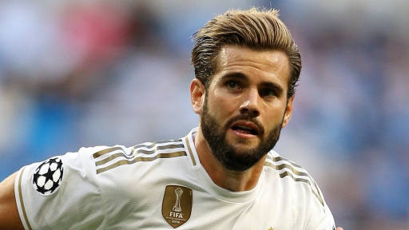

Хосе́ Игна́сио Ферна́ндес Игле́сиас (исп. José Ignacio Fernández Iglesias; 18 января 1990, Мадрид), более известный как Начо Фернандес
(исп. Nacho Fernández) или просто Начо (исп. Nacho), — испанский футболист, защитник клуба «Реал Мадрид». Чемпион Европы среди юношей не старше 17
лет (2007) и среди молодёжи (2013).
Уроженец Мадрида. Воспитанник школы клуба «Реал Мадрид», в которую поступил в возрасте 10 лет. В возрасте 12 лет у Начо был выявлен сахарный диабет 1-го типа. Это заставило его более пристально следить за состоянием здоровья и не помешало начать профессиональную карьеру футболиста.
Дебютировал за резервную команду в сезоне 2008/09 в Сегунде B, отыграл там две встречи в том году. Итого сыграл три полных сезона в этом дивизионе. По итогам сезона 2011/12 вместе с «Кастильей» получил возможность играть уже в Сегунде. 23 апреля 2011 года Начо дебютировал в основном составе «Реала» в матче Примеры против «Валенсии», в котором «сливочные» победили со счётом 6:3[5], отыграл весь матч от начала и до конца. Второй матч провёл через неделю, но его клуб сенсационно проиграл «Реалу» из Сарагосы[6].
Летом 2011 года принял участие в североамериканском турне, играл в матчах против клубов «Лос-Анджелес Гэлакси», «Гвадалахара» и «Филадельфия Юнион». 2 сентября 2012 года официально получил футболку с номером 27[7], но по решению Жозе Моуринью остался на некоторое время в резервном клубе[8].
27 ноября 2013 года на 27-й минуте заменил Хесе в групповом матче Лиги чемпионов УЕФА, так как Серхио Рамос был удален.
В составе юношеской сборной Испании выиграл чемпионат Европы до 17 лет в 2007 году, завоевал серебряную медаль на чемпионате мира в том же году.
Принял участие на молодёжном чемпионате Европы в Израиле, где выиграл золотые медали турнира.
Реал Мадрид